Większość klientów wejdzie z telefonu: gracze i rodzice z reklam na Facebooku i TikToku. Dlatego telefon ma własną nawigację, a nie zmniejszoną stronę z komputera. Zrzuty pochodzą z prawdziwych plansz w szerokości 390 px (iPhone 15). Każda strona ma też osobną planszę „telefon” w pełnej długości.
Zestawy · Pod grę · Konfigurator (środek, złoty) · Zapytanie (licznik) · Menu. Widoczny na każdej stronie poniżej 761 px. Aktywna karta złota z kreską u góry.
Znak, porównanie z licznikiem i konto. Chowa się przy przewijaniu w dół, wraca przy przewijaniu w górę. Bez hamburgera — menu jest w dolnym pasku.
Menu, filtry, wybór gry i monitora, szczegóły części, błąd zgodności. Zamykanie: tło, krzyżyk, przesunięcie w dół, klawisz Esc. Fokus zostaje w arkuszu.
Karta zestawu: istota, cena, Zapytaj. Konfigurator: cena i następny krok. Zawsze nad dolnymi kartami, z uwzględnieniem safe-area iPhone’a.
Istoty na głównej, propozycje pod grę, inne istoty, ścieżki „Od czego zaczynasz”. Scroll-snap, kolejna karta zagląda z prawej, bez pasków przewijania.
Cele dotyku min. 44 px, ważne przyciski w dolnej połowie ekranu, kontrast AA, widoczny fokus, prefers-reduced-motion wyłącza animacje scen i przejść.
Lighthouse mobile ≥ 90. Sceny na telefonie w lżejszej wersji (mniej warstw, bez paralaksy), zdjęcia WebP/AVIF w rozmiarze ekranu, czcionki z preload.
Pełny nagłówek z hamburgerem; to samo menu otwiera się jako panel z prawej. Dolnego paska nie ma.
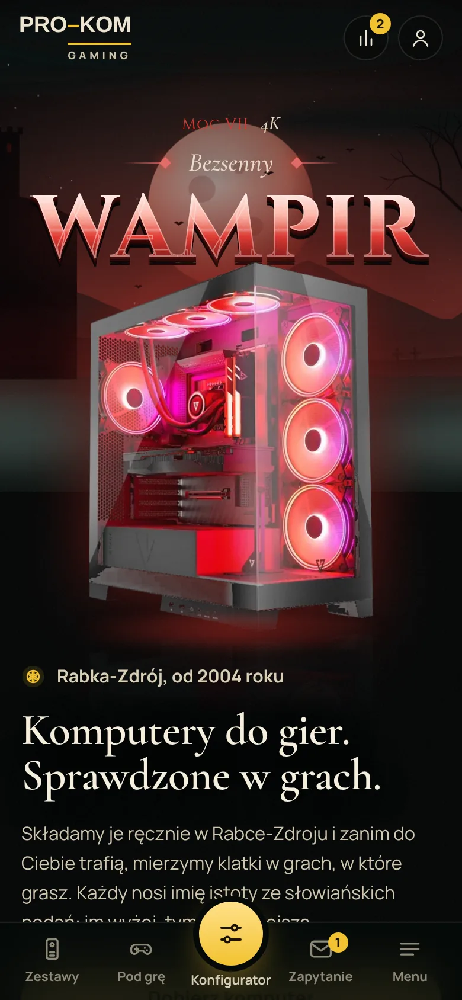
Kompaktowy nagłówek: znak, porównanie z licznikiem, konto. Dolny pasek kart zawsze pod kciukiem; konfigurator jako wyróżniony środek.
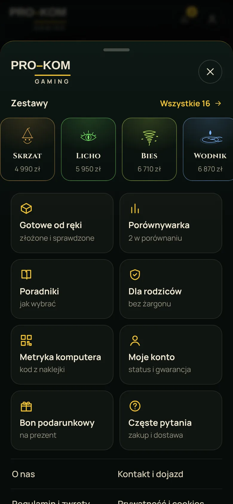
Arkusz od dołu (przesunięcie w dół lub tło zamyka). Na górze 16 istot do przewinięcia, niżej kafelki, linki i kontakt z przyciskami Zadzwoń / Napisz.
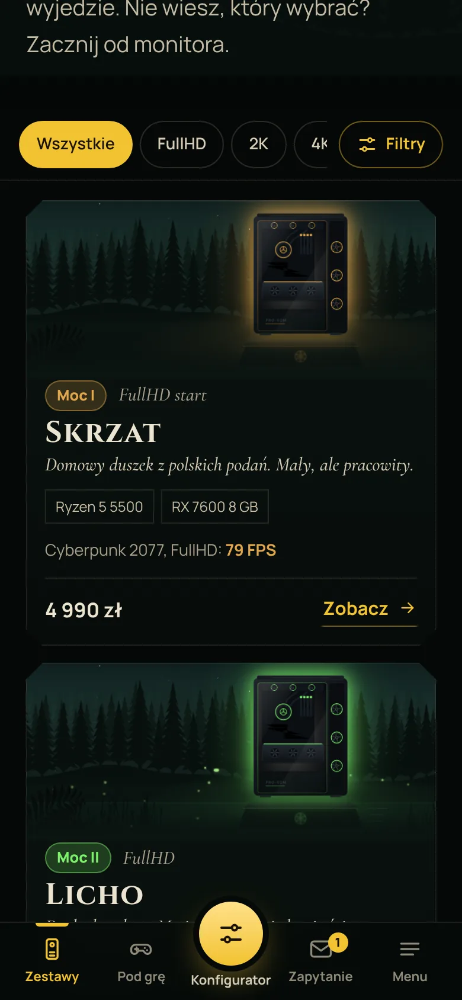
Monitor jako szybkie przyciski przyklejone do góry listy. Karty niższe niż na desktopie: scena, nazwa, 2 części, klatki, cena.
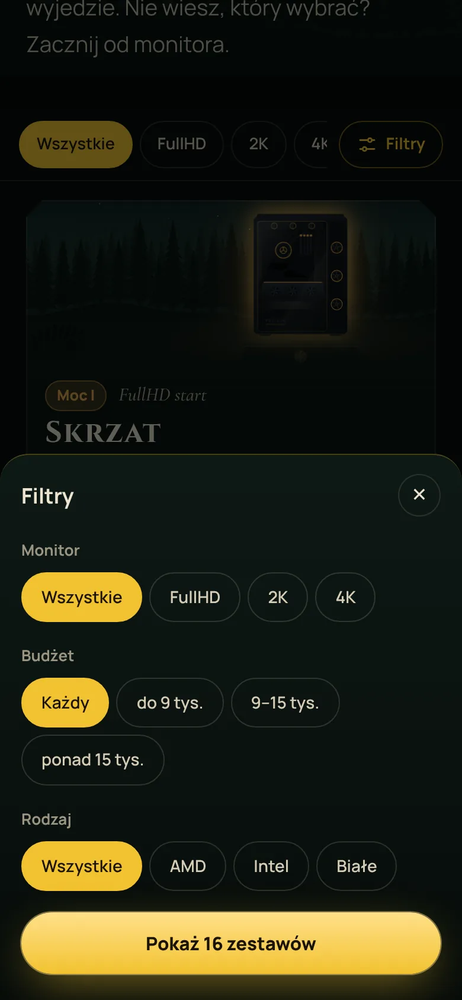
Budżet i rodzaj w arkuszu od dołu; przycisk pokazuje na żywo, ile zestawów zostanie. Liczba aktywnych filtrów na przycisku Filtry.
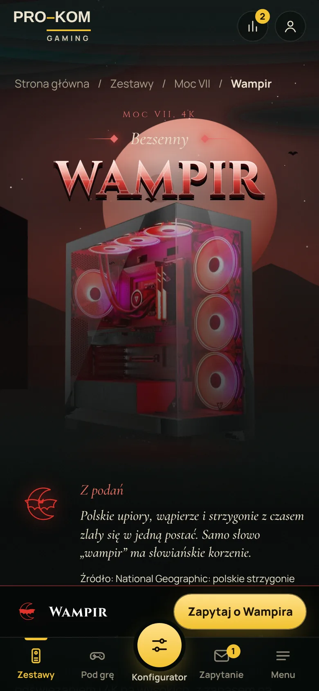
Pasek zakupu przyklejony nad dolnymi kartami: istota, cena, Zapytaj. Zawsze widać, ile kosztuje i co dalej.
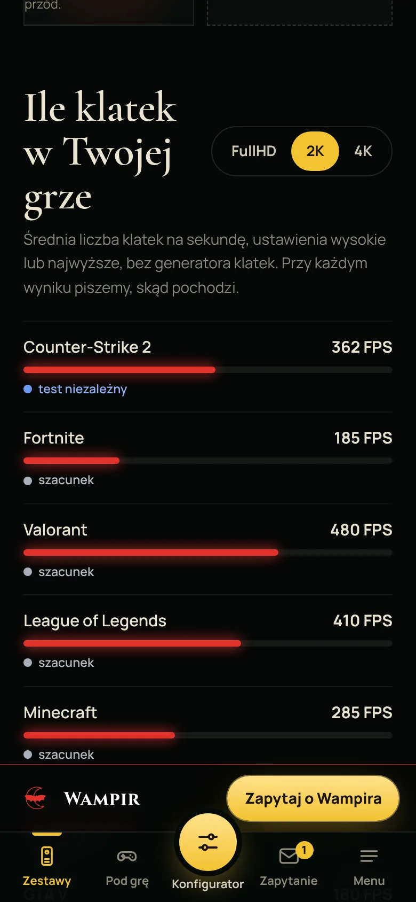
Przełącznik FullHD / 2K / 4K jako segmenty. Lista gier: nazwa i liczba, pasek, pod spodem etykieta źródła (test, przeliczone, szacunek).
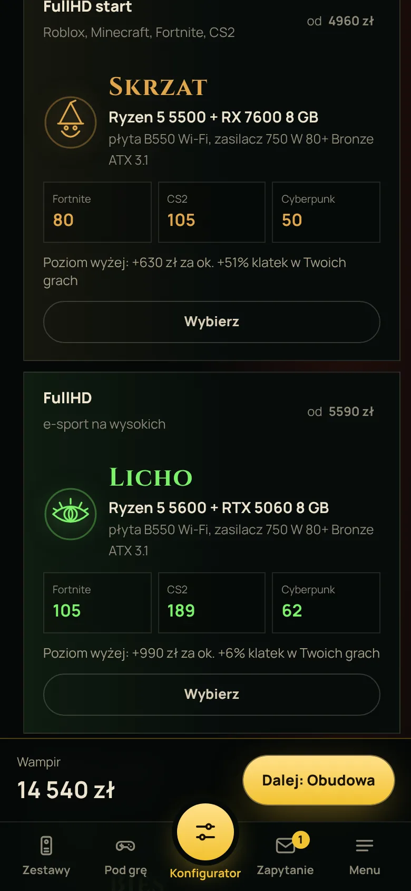
Kroki jako przewijany pasek u góry. Cena i „Dalej: Obudowa” przyklejone nad dolnymi kartami, przeliczane przy każdym wyborze.
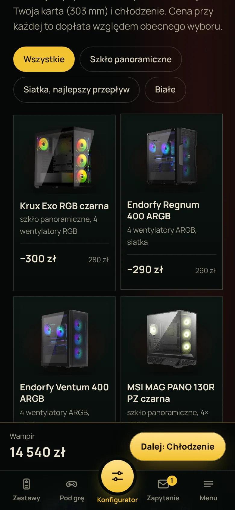
Siatka 2 kolumn ze zdjęciami. Dopłata względem obecnego wyboru; niepasujące opcje wyszarzone z powodem po dotknięciu.
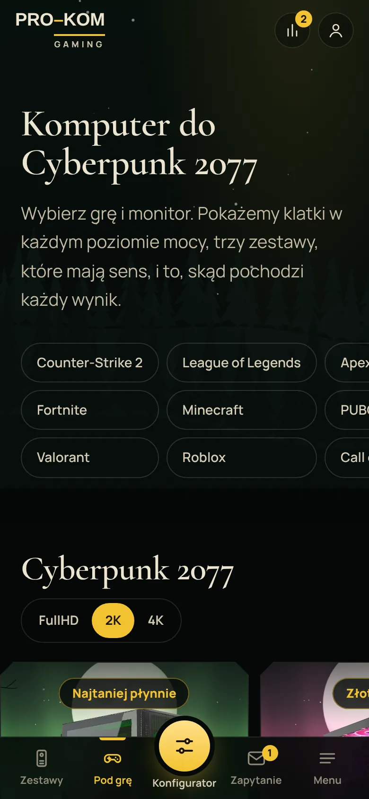
Gry jako przewijane w poziomie przyciski (3 rzędy). Wybrana gra od razu przelicza wyniki niżej.
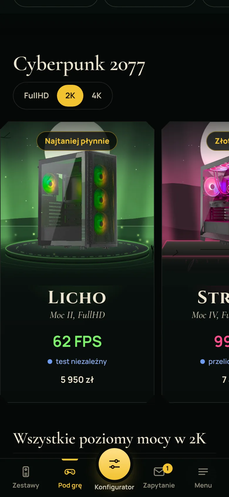
Trzy propozycje jako karuzela z przyciąganiem (scroll-snap); kolejna karta zagląda z prawej, więc widać, że można przesunąć.
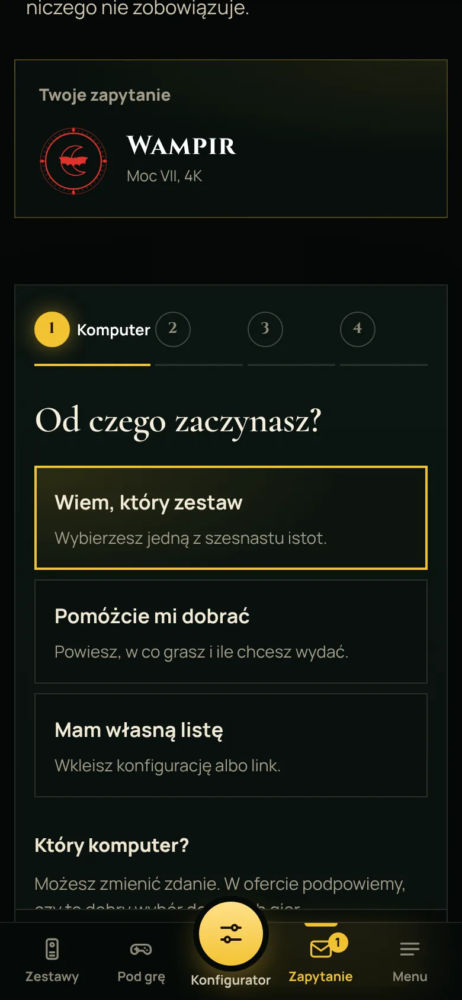
Formularz w 4 krokach, duże pola wyboru (min. 48 px). Wybrany komputer z konfiguratora trafia na górę sam.
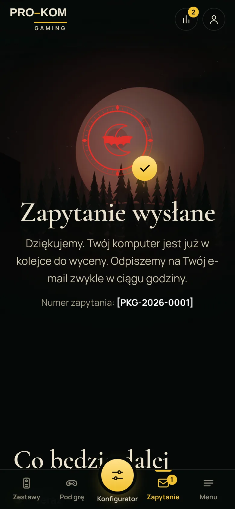
Potwierdzenie z numerem zapytania i tym, co będzie dalej. Karta Zapytanie podświetlona, licznik znika po wysłaniu.
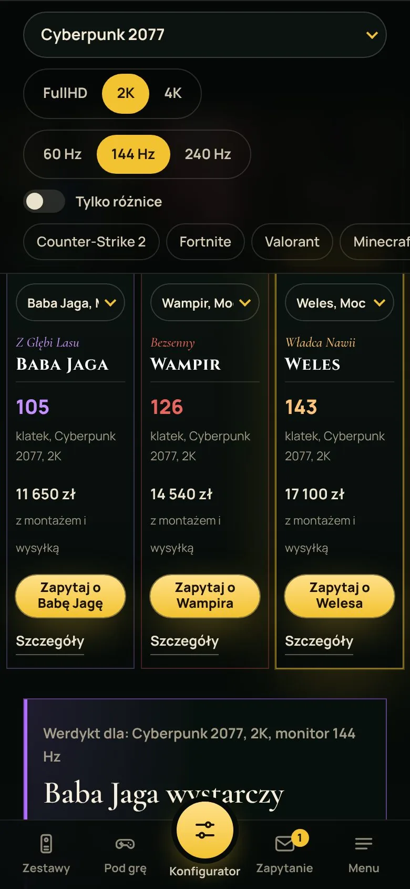
Wybór gry, rozdzielczości i odświeżania w przewijanym pasku, werdykt i słupki klatek dla 2–3 istot, „Wyślij to porównanie” linkiem.